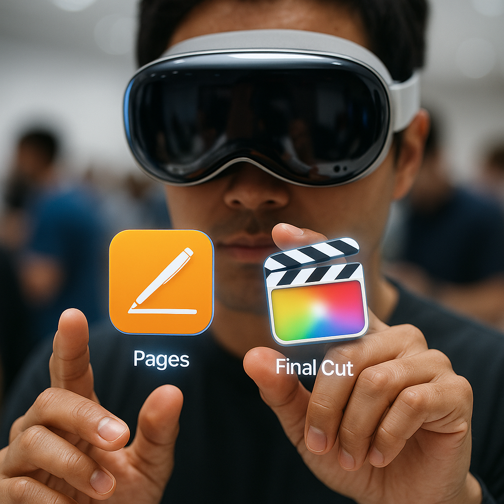
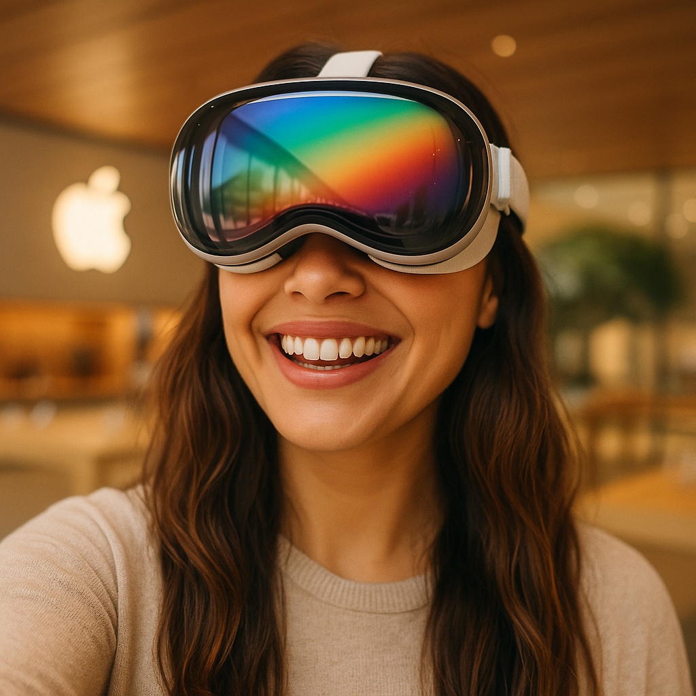

¿Valió la pena el hype?
Vision Pro cambió mi percepción del escritorio digital…
Ficha técnica rápida
| Pantallas | Micro-OLED 4 K × 2 | Chip | M2 + R1 |
|---|---|---|---|
| Sensores | 12 cámaras · LiDAR | Optic ID | ✓ Iris scan |
| BaterÃa | ≈ 2 h uso intenso | Peso | ~ 600 g |
Lo mejor y lo mejorable
👠Pros
- Pantallas 4K-por-ojo
- Gestos + Optic ID
- VÃdeo espacial
- Audio espacial
👀 Contras
- Peso tras 30 min
- BaterÃa externa
- Pocas apps nativas
Mi jornada resumida
-
09:45

Check-in & calibración
Optic ID listo en 2 min; visor impecable y banda superior incluida.
-
10:30

Selfie arcoÃris
El visor refleja la cúpula LED: mi foto más colorida del año.
-
11:15
Gift bag exclusiva
Pin Vision Pro y 3 meses de Apple One Fitness+ para entrenar en realidad mixta.
Preguntas frecuentes
¿Marea tras uso prolongado?
Usé Vision Pro 40 min sin mareos; Apple recomienda pausas cada hora.
¿Sirve para gaming serio?
Apple Arcade ya funciona y Unity ha confirmado soporte para VR-AAA.
¿Cuánto tarda en cargarse la baterÃa externa?
≈ 1 h 10 min de 0 → 100 % con cargador USB-C de 30 W.
¿Hay modelos con más memoria?
Se venderá en 256 GB, 512 GB y 1 TB.
Precio y disponibilidad
US$ 3 499 (EE. UU.) — llega a España “principios 2026”.
“Apple acaba de redefinir la palabra monitor.”
— @TechPablo, 10 may 2025